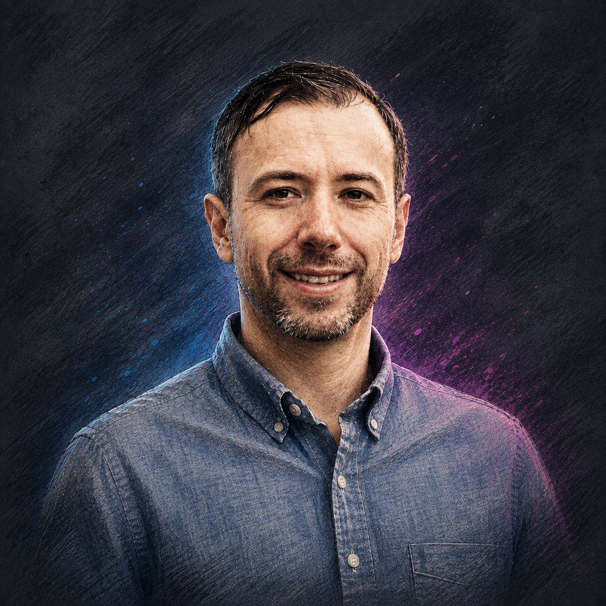

Transforming analytics for the AI era.
Global Delivery Director at Boston Consulting Group with 18+ years of experience leading BI and analytics strategy, managing teams of up to 15, and modernizing enterprise platforms for AI-native ways of working.

Platforms, people, and operating models - built to move together.
I lead global strategy for BCG's enterprise BI and analytics ecosystem, spanning Power BI and Fabric, Tableau, Alteryx, and SPSS. My team owns both the front-end experience and the backend infrastructure, translating business needs into technology that gets adopted - not shelved.
Set direction for a complex analytics ecosystem serving a worldwide consulting organization.
Guide colleagues across the U.S., Europe, Asia, and Latin America, spanning user experience, platform architecture, and infrastructure.
Build the business case and lead initiatives projected to save up to $15M while modernizing the underlying stack.
Apply an FDE-style model to train and evaluate consultants using tools such as Claude in day-to-day work.
From dashboard-first BI to intelligent operations.
Enterprise analytics is shifting toward conversational interfaces, agentic workflows, and copilots embedded where work happens. I prepare the technology, talent, governance, and operating model for that transition.
Practical paths from established reporting estates toward cloud-native, governed analytics.
Move beyond static consumption toward conversational and assistive analytics.
Identify repeatable processes where automation and AI remove friction while preserving control.
Connect technology to governance, operating models, enablement, and measurable value.
From finance foundations to enterprise platform strategy.
Select any point on the timeline to see how each position expanded my scope across finance, strategy, consulting, analytics platforms, and international delivery.
2024–PresentGlobal Delivery Director Boston Consulting Group
Lead enterprise BI platform strategy, international teams, large-scale modernization, and AI enablement across BCG's analytics ecosystem.
2022–2024BI Platform Architect Boston Consulting Group
Owned enterprise analytics and visualization platforms, with accountability for architecture, operational excellence, and user experience.
2021–2022IT Project Manager Boston Consulting Group
Managed the transition of a finance data warehouse from on-premises Oracle to cloud-based Snowflake.
2016–2021Management Consultant
Guided analytics programs across industries, developed cloud-investment business cases, established Data-as-a-Service processes, and taught Power BI workshops.
2014–2017Strategy Analyst
Used operational analytics and automation to improve management decisions, including emergency-response analysis and major reductions in manual data entry.
2011–2014FP&A & Accounting
Advanced through financial and project analysis roles while building reporting, modeling, and enterprise BI capabilities.
2008–20113-Year Financial Leadership Development Program (FLDP)
Rotational experience across financial planning, accounting, program controls, and business operations in multiple locations.
Click a position to expand or collapse its details.
Business fluency, technical depth, and adoption discipline.
Building the next operating model for analytics + AI.
I'm interested in conversations about enterprise AI transformation, analytics modernization, platform strategy, and practical enablement - especially where organizations need to bridge technical ambition with solutions people will actually use.
Start a conversation on LinkedIn ↗